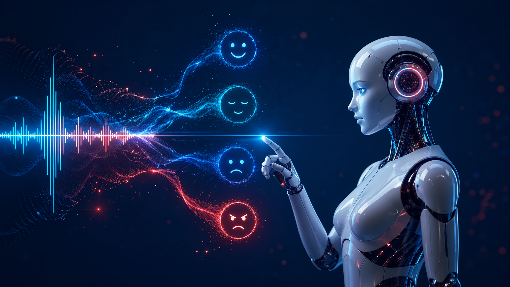
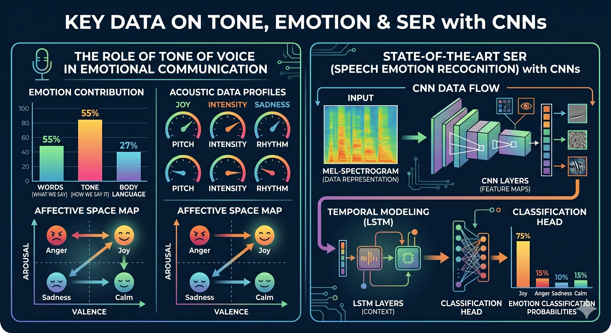
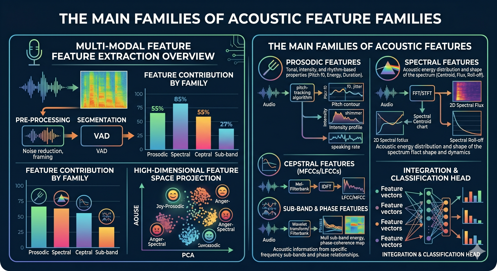
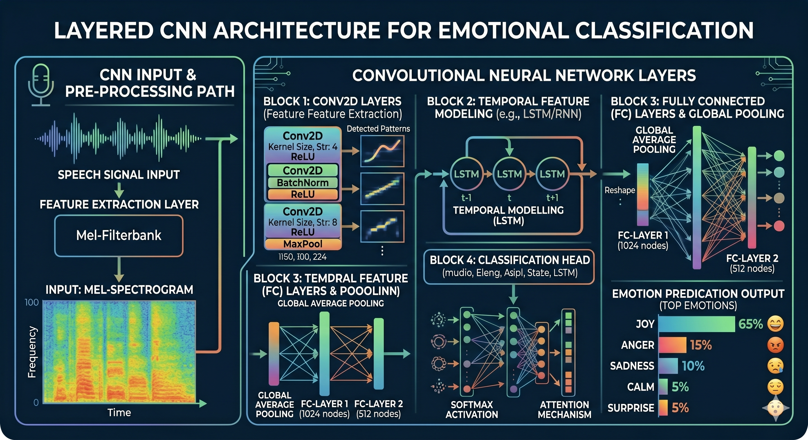
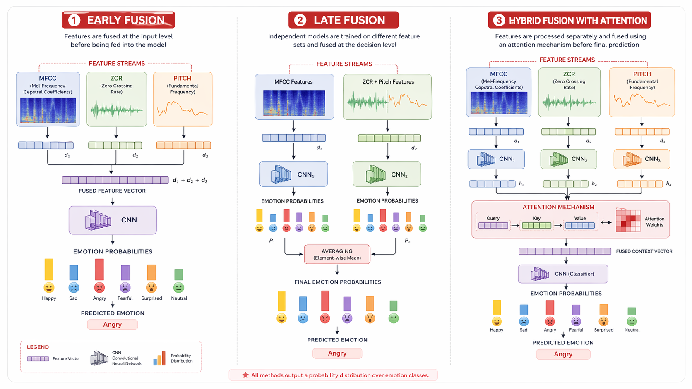
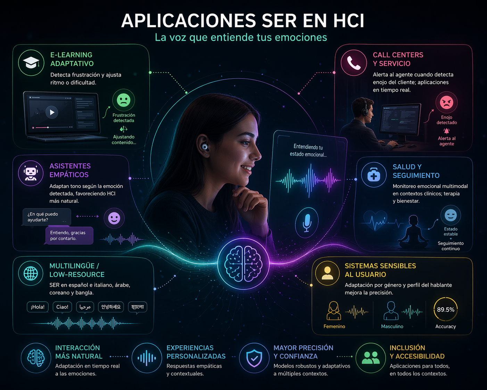
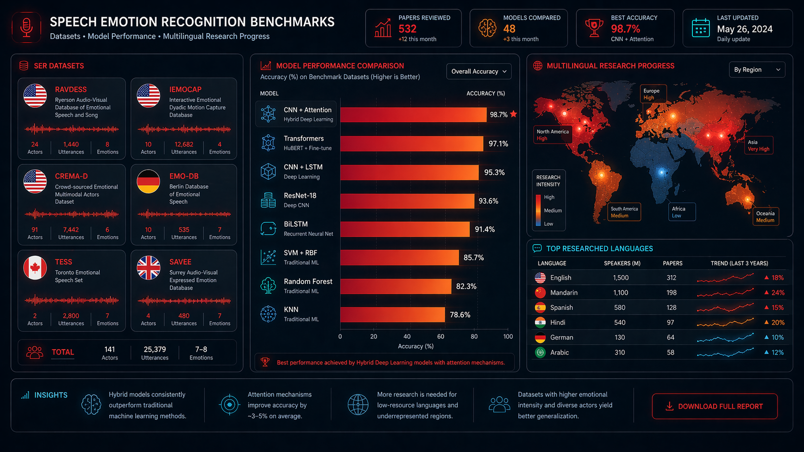

Instituto de Posgrados
Especialización en Inteligencia Artificial
Reconocimiento Emocional
por Voz en
Interfaces Adaptativas

Imagen generada con ChatGPT (OpenAI, 2026).
Resultado Esperado de Aprendizaje
Al finalizar, el estudiante analiza los fundamentos y aplicaciones del reconocimiento emocional por vozSER: proceso por el cual un sistema identifica el estado emocional de un hablante a partir de características acústicas de su señal de voz. mediante CNNs en el contexto de la interacción humano-computadorHCI: campo que estudia el diseño y uso de interfaces entre personas y sistemas computacionales., a partir de evidencia científica reciente, evidenciado por la resolución correcta del 80% de las actividades del ODC.
Población Objetivo
Estudiantes y profesionales de ingeniería de sistemas, inteligencia artificial y áreas afines, interesados en computación afectivaCampo que desarrolla sistemas capaces de reconocer, interpretar y responder a emociones humanas (Picard, 1997). y diseño de interfaces adaptativas.
Metodología de exploración
Este ODC se recorre de forma libre y no lineal. Cada módulo tiene textos, recursos visuales y una actividad interactiva. La evaluación final requiere 80% de aciertos.

Imagen generada con Gemini (Google, 2026).
La Brecha Emocional en la Interacción Humano-Computador
La comunicación humana es inherentemente emocional. Mehrabian y Wiener (1967) mostraron que, cuando el mensaje verbal contradice las señales no verbales, el tono de voz pesa mucho más que las palabras. Sin embargo, la mayoría de los sistemas computacionales procesan únicamente el contenido semántico, ignorando esta dimensión afectiva.
La computación afectivaTérmino acuñado por Rosalind Picard (MIT, 1997). Sistemas capaces de reconocer, interpretar y responder a emociones humanas mediante múltiples modalidades. como respuesta
La computación afectiva busca cerrar esta brecha (Picard, 1997). El SERSpeech Emotion Recognition: clasificación del estado emocional de un hablante a partir de características acústicas de su voz. es su línea más activa, especialmente porque la voz es natural, no invasiva y disponible en la mayoría de dispositivos (Alnuaim et al., 2022; Schuller, 2018).
Computación Afectiva
Término acuñado por Rosalind Picard (MIT, 1997). Incluye voz, expresión facial, texto, señales fisiológicas y movimiento. Hoy integra enfoques multimodales como MIST (Boitel et al., 2025).
🧩 Actividad
Los asistentes virtuales actuales detectan automáticamente si el usuario está frustrado y adaptan su respuesta.
El SER analiza características como tono, energía y ritmo para clasificar emociones.
La computación afectiva se limita únicamente al reconocimiento facial.

MFCC
Coeficientes cepstrales en escala Mel; simulan la percepción auditiva humana. La característica más usada en SER (Chowdhury et al., 2025).
Mel Spectrogram
Representación visual tiempo-frecuencia tratada como imagen 2D por las CNNs (Begazo et al., 2024).
ZCR
Tasa de cruces por cero; diferencia segmentos sonoros de fricativos (Chowdhury et al., 2025).
Pitch / F0 y RMSE
Frecuencia fundamental y energía; emociones de alta activación muestran F0 alto (Kurniadi et al., 2025).
Imagen generada con Gemini (Google, 2026).
Fundamentos del Reconocimiento Emocional por Voz
El SER identifica el estado emocional a partir de la señal de voz. A diferencia del reconocimiento convencional, se enfoca en el cómo se dice algo (Schuller, 2018; Akinpelu & Viriri, 2024).
El pipeline sigue tres fases: adquisición → extracción de características acústicasRepresentaciones numéricas de propiedades del sonido: energía, frecuencia, timbre, ritmo. Pueden ser artesanales (MFCC, ZCR) o aprendidas automáticamente por la red. → clasificación emocional. Los trabajos recientes combinan características artesanales y aprendidas (Chowdhury et al., 2025).
Escala Mel
El oído humano no percibe las frecuencias linealmente. La escala Mel da más resolución a frecuencias bajas (donde se concentra el habla) y menos a altas, alineando la representación con la percepción auditiva.
🧩 Relaciona cada característica
Selecciona un término y luego su descripción.

Entrada
Espectrograma Mel como matriz 2D
Convolución
Extrae patrones locales del espectrograma
Pooling
Reduce dimensionalidad manteniendo características clave
Dropout
Regularización para evitar sobreajuste
Fully Connected + Softmax
Clasificación final de emociones
Imagen generada con Gemini (Google, 2026).
Redes Neuronales Convolucionales para SER
Las CNNsRedes Neuronales Convolucionales: arquitecturas de deep learning que aplican filtros para detectar patrones locales en datos estructurados como imágenes o espectrogramas., diseñadas para imágenes, son ideales para espectrogramas. Al convertir la voz en un espectrograma Mel, se transforma en una imagen 2D procesable (Akinpelu & Viriri, 2024).
Arquitecturas híbridas
CNN-LSTM
96.5% accuracy RAVDESS (Bhanbhro et al., 2025)
CNN-BiLSTM + Atención
98.1%; sin BiLSTM baja a 89% (Bhanbhro et al., 2025)
CNN + Transformer (wav2vec 2.0)
92.7% RAVDESS (Wei et al., 2025)
CapsNet + CBAM
98.57% RAVDESS, 98% TESS (Barsainyan & Singh, 2024)
Transformer y wav2vec 2.0
Arquitectura basada en auto-atención que procesa secuencias en paralelo. wav2vec 2.0 aprende representaciones del habla de forma auto-supervisada y se usa como extractor preentrenado (Wei et al., 2025).
🧩 Ordena las capas de una CNN
Arrastra las capas para ordenarlas de entrada a salida.

Fusión Temprana
Stack optimizado: 90.10% RAVDESS (Fadhil & Zahra, 2024)
Fusión Tardía
Ensemble CNN + CNN-BiLSTM: 97.57% RAVDESS, 100% TESS (Chowdhury et al., 2025)
Fusión Híbrida + Atención
Prosodic-spatiotemporal: 97.64% (Nugroho et al., 2025)
Multi-rama
SCAR-NET mejora modelos de una sola rama (Mao et al., 2023)
Imagen generada con ChatGPT (OpenAI, 2026).
Fusión de Características y Estrategias Ensemble
Una sola característica acústica rara vez captura toda la complejidad emocional. La fusión permite capturar información complementaria, mejorando precisión y robustez (Manolekshmi & Mukunthan, 2025).
Tipos de fusión
Temprana (feature-level)Combina vectores de características de distintas fuentes en uno solo antes de pasarlo al clasificador.: combina características en un vector antes de clasificar.
Tardía (decision-level)Cada modelo clasifica independientemente y sus predicciones se combinan por votación o promedio de probabilidades.: cada modelo predice y las salidas se combinan.
Híbrida con atención: pondera representaciones de múltiples espectrogramas (Nugroho et al., 2025).
Soft vs Hard Voting
Hard: vota por mayoría de clases. Soft: promedia probabilidades — más preciso porque aprovecha la confianza de cada modelo (Chowdhury et al., 2025).
🧩 Identifica el tipo de fusión
Dos CNNs independientes sobre MFCCs y espectrogramas. Se promedian sus probabilidades de salida.
Se concatenan MFCC + ZCR + RMSE en un vector único y se pasa a una CNN.

E-learning adaptativo
Detecta frustración y ajusta ritmo o dificultad (Alnuaim et al., 2022)
Call centers
Alerta al agente cuando detecta enojo del cliente (Badawood & Aldosari, 2024)
Asistentes empáticos
Adaptan tono según emoción detectada (Alnuaim et al., 2022)
Salud y seguimiento
Monitoreo emocional multimodal en clínica (Mostert et al., 2025)
Multilingüe
Español, italiano, árabe, coreano, bangla (Ortega-Beltrán et al., 2026)
Sensibles al usuario
Adaptación por género mejora precisión (Hu et al., 2025; Kurniadi et al., 2025)
Imagen generada con ChatGPT (OpenAI, 2026).
Aplicaciones de SER en la Interacción Humano-Computador
Una interfaz adaptativa emocionalSistema que detecta el estado emocional del usuario en tiempo real y modifica su comportamiento, contenido o presentación en respuesta. detecta el estado del usuario y modifica su comportamiento en respuesta. La voz es natural, no invasiva y disponible en la mayoría de dispositivos (Alnuaim et al., 2022).
Hu et al. (2025) alcanzaron 89.5% de accuracy general con un framework sensible al género (92% femenino, 87% masculino). Ortega-Beltrán et al. (2026) muestran que modelos SOTA (wav2vec 2.0) generalizan a español e italiano, idiomas frecuentemente subrepresentados.
🧩 Caso breve
Una universidad implementará e-learning emocional. ¿Qué componente es MÁS crítico primero?

Actuado vs. Espontáneo
Actuado: etiquetas claras pero artificiales. Espontáneo: más ecológico pero difícil de etiquetar. IEMOCAP combina scripted e improvisado (Busso et al., 2008).
Imagen generada con ChatGPT (OpenAI, 2026).
Estado del Arte: Datasets y Tendencias
Métricas de evaluación
Tendencias observadas en la revisión
Dal Rí et al. (2023) revelan fuertes sesgos por corpus: 83% (RAVDESS), 100% (TESS), 68% (CREMA-D), 63% (IEMOCAP) con un mismo modelo. Los modelos basados en TransformersArquitectura de deep learning basada en auto-atención que procesa secuencias completas en paralelo, sin recurrencia. y wav2vec 2.0 muestran robustez en escenarios multilingües (Wei et al., 2025; Ortega-Beltrán et al., 2026).
🧩 Selección múltiple
¿Cuál dataset incluye tanto guiones escritos como improvisaciones diádicas?
Según Dal Rí et al. (2023), ¿qué evidencia es clave en la validación cruzada entre datasets?
🎙️ Analizador de Emociones por Voz
Selecciona un audio pre-grabado para ver el análisis de la red neuronal simulada.
Neutral
Confianza: 0%
¿Por qué ocurre esta confusión?
Esta es una simulación del modelo 1D CNN real entrenado en el proyecto. Nota cómo en el Audio 2, aunque la emoción principal es la Ira, el modelo también asigna una probabilidad notable a la Felicidad.
Esto ocurre porque ambas son emociones de "alta activación" (alto arousal), compartiendo características acústicas como alta energía y frecuencia fundamental (Pitch) elevada.
Por otro lado, el Audio 1 muestra ambigüedad entre Neutral y Tristeza por ser emociones de baja energía. Esta "confusión" es típica en sistemas SER y demuestra que el análisis acústico mediante MFCCs no siempre es suficiente sin contexto semántico (Bhanbhro et al., 2025).
Evaluación Final
8 preguntas · necesitas 80% (6/8) para aprobar
Pregunta 1 de 8
¿Cuál es el objetivo principal del Speech Emotion Recognition (SER)?
Pregunta 2 de 8
Los MFCC son ampliamente usados en SER porque:
Pregunta 3 de 8
¿Cuál es la función principal de las capas convolucionales en una CNN para SER?
Pregunta 4 de 8
¿Qué ventaja aporta CNN-BiLSTM con atención frente a una CNN sola (Bhanbhro et al., 2025)?
Pregunta 5 de 8
En la fusión tardía, ¿en qué momento se combinan las fuentes de información?
Pregunta 6 de 8
¿Cuál es una aplicación directa de SER en e-learning?
Pregunta 7 de 8
Según Busso et al. (2008), ¿por qué IEMOCAP es valorado en la investigación?
Pregunta 8 de 8
Según Dal Rí et al. (2023), ¿qué observación es correcta?
Conclusión
Retos en la investigación y revisión de literatura
Durante la búsqueda estructurada (PRISMA), nos enfrentamos a la abrumadora cantidad de modelos propuestos anualmente. El desafío no fue encontrar información, sino filtrar arquitecturas que realmente aportaran a la interacción humano-computador (HCI) y no fueran solo ejercicios teóricos de optimización de accuracy en datasets de laboratorio.
La brecha entre teoría y desarrollo real
En el desarrollo de este proyecto se evidencia que alcanzar precisiones del 98% en ambientes controlados (como RAVDESS) no garantiza el éxito en la vida real. Construir el ODC nos hizo conscientes de la dificultad técnica de integrar modelos pesados de Deep Learning en interfaces web adaptativas que deben responder en tiempo real.
Desafíos con el idioma y sesgo de datos
Uno de los mayores obstáculos en la investigación de SER es la escasez de recursos robustos en español. La gran mayoría de modelos pre-entrenados y datasets están en inglés, lo que obliga al desarrollador latinoamericano a enfrentarse a procesos complejos de Transfer Learning o a lidiar con caídas de rendimiento al cambiar de idioma.
Reflexión sobre el rol del desarrollador en IA
Más allá de apilar capas convolucionales, el desarrollo de este ODC nos enseñó que el verdadero trabajo del especialista en IA es la toma de decisiones críticas: ¿qué características acústicas extraer?, ¿cómo evitar el sobreajuste? y, sobre todo, ¿cómo asegurar que la aplicación final sea éticamente responsable con la privacidad del usuario.
Siguientes pasos
Referencias
Formato APA 7 · Matriz PRISMA (30 artículos) + fuentes fundacionales + recursos visuales
Matriz de revisión de literatura (PRISMA 2020, 30 artículos)
Fuentes fundacionales y datasets
Recursos visuales (imágenes generadas con IA)
Créditos y Metadatos
Metadatos del ODC
| Área de conocimiento | Inteligencia Artificial · Interacción Humano-Computador |
| Nombre del material | Reconocimiento Emocional por Voz en Interfaces Adaptativas |
| Autores | Yow Nicolás Guacaneme Molano · Miguel Angel Pardo López |
| Diseño y desarrollo | Yow Nicolás Guacaneme Molano |
| Tutoría | Jhondert Alberto Jaimes Rodriguez |
| Imágenes | Logo: Universidad de Cundinamarca. Ilustraciones: generadas con ChatGPT (OpenAI) y Gemini (Google), 2026. |
| Sonidos y voces | Guiones locutados por avatar de IA generativa a partir de textos elaborados por los autores, 2026. |
| Fecha de creación | 2026 |
| Nivel educativo | Alto (Posgrado / Especialización) |
| Institución | Universidad de Cundinamarca |
Programa académico
Especialización en Inteligencia Artificial
Instituto de Posgrados
Universidad de Cundinamarca · 2026
Número de pantalla
14
Pantalla final del ODC

Los RED producidos bajo la supervisión de la Oficina de Educación Virtual y a Distancia de la Universidad de Cundinamarca cuentan con licencia Creative Commons CC BY-NC-SA 4.0.